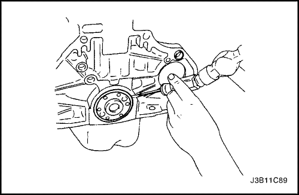

REPARACIÓN DE LA UNIDAD
Culata y componentes de la serie de válvulas
Herramientas necesarias
Calibrador KM-571-B
Juego de fresas KM-340-0
Botador de guías KM-340-7
Fresas KM-340-13
Fresas KM-340-26
Compresor de muelles de válvula KM-348
Adaptador KM-653
Escariador de guías de válvula KM-805


procedimiento de desmontaje (desarmado, desensamble, desensamblaje)
- Desmonte la culata con el colector de admisión y el colector de escape unidos a la misma. Consulte el apartado "Culata y junta de culata" de esta sección.
- Desmonte el escudo térmico del colector de escape.
- Quite las tuercas de fijación del colector de escape en la secuencia indicada.
- Desmonte el colector de escape.
- Retire la junta del colector de escape.
- Quite los espárragos del colector de escape.

- Quite los tornillos de fijación de la caja del termostato.
- Desmonte el conjunto de la caja del termostato.
- Quite los tornillos de fijación del alojamiento del bypass del refrigerante así como el propio alojamiento.
- Desmonte la rampa de inyectores de combustible. Consulte el apartado 1F2, Controles del motor - FAM II 2.4D.
- Quite los tornillos y las tuercas de fijación del colector de admisión en la secuencia indicada.
- Desmonte el soporte del colector de admisión.
- Desmonte el colector de admisión.
- Retire la junta del colector de admisión.
- Retire el espárrago del colector de admisión.
- Desmonte la tapa de la culata. Consulte el apartado "Tapa de la culata" en esta sección.
- Quite los tornillos de fijación del adaptador de la válvula de recirculación de gases de escape (EGR) y de la bobina del sistema de encendido directo (DIS).
- Desmonte el adaptador de la válvula EGR y la bobina DIS.
- Desmonte las bujías.
- Quite los tornillos de las tapas de los cojinetes de los árboles de levas de manera gradual y en la secuencia indicada para cada tapa.
- Desmonte las tapas del árbol de levas de admisión. Mantenga las posiciones correctas de cara al montaje.
- Desmonte el árbol de levas de admisión.
- Desmonte los dispositivos de ajuste de los taqués de las válvulas de admisión.
- Desmonte las tapas del árbol de levas de escape. Mantenga las posiciones correctas de cara al montaje.
- Desmonte el árbol de levas de escape.
- Desmonte los dispositivos de ajuste de los taqués de las válvulas de escape.

- Comprima los muelles de las válvulas con el compresor de muelles de válvula KM-348 y el adaptador KM-653.
- Desmonte los retenedores de las válvulas.
- Desmonte el compresor de muelles de válvula KM-348 y el adaptador KM-653.
- Desmonte los platillos de muelle de las válvulas.
- Desmonte los muelles de válvula. Mantenga la posición original de estos muelles de cara a su montaje.
- Desmonte las válvulas. Mantenga la posición original de las mismas de cara a su montaje.

Comprobación de la culata
- Limpie las superficies de cierre.
- Revise la culata y compruebe las siguientes anomalías:
- Grietas, daños o depósitos en las cámaras de combustión.
- Suciedad en los conductos de aceite. Limpie los conductos hasta eliminar toda la sociedad.
- Fugas de refrigerante o daños en la superficie de sellado. ·Daños en las superficies de las juntas.
- Daños en los orificios roscados de tornillos.
- Zonas quemadas o desgastadas en la cámara de combustión.
- Grietas en las salidas de escape y en las cámaras de combustión.
- Grietas externas en los conductos de agua.
- Restricciones en los conductos de admisión o escape.
- Obstrucciones en los conductos del sistema de refrigeración.
- Tapones oxidados, dañados o con fugas.
- Si la culata está agrietada o dañada, debe ser sustituida. No se recomienda soldar o reparar la culata.
- Mida la holgura entre la regla y la cara de junta de la culata utilizando una galga en cuatro puntos a lo largo de la regla.
- Compruebe la existencia de deformaciones y alabeo en las superficies de cierre. Las superficies de cierre de la culata deben ser planas con una tolerancia máxima de 0,025 mm (0,001 pulg.).

- Mida la altura de la culata, de superficie de cierre a superficie de cierre. La altura de la culata debe estar entre 135,975 y 134,025 mm (5,274 y 5,276 pulg.). Si la altura de la culata fuera inferior a 133,9 mm (5,271 pulg.), sustituya la culata.

Comprobación de las válvulas
- Compruebe si la válvula tiene daños desde la cabeza hasta la punta.
- depósitos en la zona del asiento de la válvula (1)
- falta de margen en la válvula (2)
- curvado del vástago de la válvula (3)
- depósitos o desgaste excesivo del vástago (4)
- ranuras de la chaveta de la válvula desgastadas (5)
- punta de la válvula desgastada (6)
- Sustituya la válvula si se da alguno de estos problemas.
- Compruebe los muelles de válvula. Si los extremos del muelle de válvula no son paralelos, sustituya el muelle.
- Compruebe la superficie de asiento de los muelles de válvula de los rotadores de válvulas en busca de desgastes o surcos. Sustituya según necesidades.
procedimiento de limpieza
- Limpie la culata.
- Limpie las guías de válvula.
- Limpie todos los taladros roscados.
- Limpie la carbonilla, el aceite y el barniz de todas las válvulas.
Revisión general de la culata
Esmerilado de válvulas
- Lubrique el asiento de la válvula utilizando una pasta esmeril de grano fino.
- Levante rítmicamente la válvula de su asiento con un esmerilador de válvulas disponible comercialmente con el fin de distribuir bien la pasta.
- Compruebe el patrón de contacto en la cabeza de válvula y en la culata.
- Limpie las válvulas, las guías de válvula y la culata.
rectificado de válvulas
- Asegúrese de que no haya líneas de surcos por quemaduras en el cono de válvula.
- La válvula sólo se puede rectificar dos veces. No rectifique el extremo del vástago de válvula.
- Asegúrese de que el ángulo de la cara de la válvula sea de 45 grados.
- Compruebe la altura de montaje de las válvulas de admisión y de escape.
escariado de guías de válvula
- Mida el diámetro de la guía de válvula utilizando el reloj comparador MKM-571-B y un micrómetro de interiores disponible comercialmente.
Importante: Es probable que ya se hayan montado válvulas sobremedida en la fábrica.
- Existe un código de reparación de sobremedida en la guía y el extremo de vástago de válvula. La tabla siguiente proporciona el tamaño correcto, el escariador y el código de producción para cada código de reparación.
| Dimensiones | Escariador | Código de producción | Código de reparación |
| Normal | - | - | K |
| 0.075 | KM-805 | 1 | K1 |
| 0.150 | - | 2 | K2 |
- Escarie la guía de la válvula, hasta el próximo tamaño de sobremedida, por la parte superior de la culata.
- Después del escariado, tache el código y grabe el nuevo en la guía de la válvula.
rectificado de asientos de válvula
- Coloque la culata sobre unos tacos de madera.
- Frese los asientos de las válvulas de admisión y escape utilizando el fresador de asientos de válvulas KM-340-7 como sigue:
- Asiento de válvula - A 45 ° utilizando la fresa KM-340-13.
- Ángulo de corrección superior - A 30 ° utilizando la fresa KM-340-13.
- Baje el ángulo de corrección - A 60 ° utilizando la fresa KM-340-26.
- Limpie las virutas de la culata.
- Compruebe las dimensiones de la anchura del asiento de la válvula.
- Admisión: de 1,2 a 1,4 mm (0,047 a 0,055 pulg.)
- Escape: de 1,4 a 1,8 mm (0,055 a 0,070 pulg.)
- Compruebe la altura de montaje de las válvulas de admisión y de escape. Si se sobrepasan las cotas, monte unas válvulas nuevas. Compruebe de nuevo la altura del conjunto. Si dicha altura sigue siendo demasiado grande, a pesar de haber sustituido las válvulas, sustituya la culata.
Procedimiento de montaje (armado, ensamblaje)
- Lubrique los vástagos de las válvulas con aceite del motor.
- Monte con cuidado las válvulas en sus posiciones originales.
- Monte los muelles de válvula en sus posiciones originales.
- Monte los platillos de muelle de las válvulas.
- Comprima los muelles de las válvulas con el compresor de muelles de válvula KM-348 y el adaptador KM-653.
- Monte las chavetas de válvula.
- Desmonte el compresor de muelles de válvula KM-348 y el adaptador KM-653.
- Engrase los compensadores de los juegos de las válvulas con aceite del motor.
- Monte los dispositivos de ajuste de los taqués de válvulas.
- Monte el árbol de levas de admisión.
- Monte las tapas de los cojinetes del árbol de levas de admisión en sus posiciones originales.
- Monte el árbol de levas de escape.
- Monte las tapas de los cojinetes del árbol de levas de escape en sus posiciones originales.
- Coloque los tornillos de las tapas de los cojinetes de los árboles de levas, de manera gradual y en la secuencia indicada para cada tapa.
Apretar
Apriete los tornillos de las tapas de los cojinetes de los árboles de levas hasta 8 N•m (71 lb-pulg.).
- Monte las bujías.
Apretar
Par de apriete 25 N•m (18 lb-pie).
- Monte el adaptador de la válvula EGR y la bobina DIS.
Apretar
Apriete los tornillos del soporte de fijación de la bobina del sistema de encendido electrónico y del adaptador de la válvula de recirculación de gases de escape hasta 25 N•m (18 lb-pulg.).
- Monte los espárragos del colector de admisión.
- Monte la junta del colector de admisión.
- Monte el colector de admisión.
- Coloque el tornillo de fijación del colector de admisión en la secuencia indicada.
Apretar
Apriete las tuercas y el tornillo de fijación del colector de admisión hasta 22 N•m (16 lb-pie).
- Monte el soporte del colector de admisión.
Apretar
Apriete los tornillos del soporte del colector de admisión hasta 25 N•m (18 lb-pie).
- Monte la rampa de inyectores de combustible. Consulte el apartado 1F2, Controles del motor - FAM II 2.4D.
- Monte el conjunto de la caja del termostato.
Apretar
Apriete los tornillos de fijación de la carcasa del termostato hasta 15 N•m (11 lb-pie).
- Monte el alojamiento del bypass de refrigerante y sus tornillos de montaje.
Apretar
Apriete los tornillos de fijación del alojamiento del bypass de refrigerante hasta 15 N•m (11 lb-pie).
- Monte los espárragos del colector de escape.
- Monte la junta del colector de escape.
- Monte el colector de escape
- Coloque las tuercas de fijación del colector de escape en la secuencia indicada.
Apretar
Apriete las tuercas de fijación del colector de escape hasta 22 N•m (16 lb-pie).
- Monte el escudo térmico del colector de escape.
Apretar
Apriete los tornillos del escudo térmico del colector de escape hasta 8 N•m (71 lb-pulg.).
- Monte la culata con el colector de admisión y el colector de escape unidos a la misma. Consulte el apartado "Culata y junta de culata" de esta sección.

Cigüeñal
Herramientas necesarias
Soporte de reparación del motor DW100-030
Medidor de par angular KM-470-B
Retén de aceite trasero del cigüeñal J-36972 ó KM-635
Aviso: Tenga mucho cuidado de no rayar, mellar o dañar los árboles de levas.
procedimiento de desmontaje (desarmado, desensamble, desensamblaje)
- Desmonte el motor. Consulte el apartado "Motor" de esta sección.
- Quite los tornillos del volante motor o de la placa de acoplamiento flexible.
- Quite el volante motor o de la placa de acoplamiento flexible.

- Desmonte el retén de aceite trasero del cigüeñal.
- Monte el conjunto del motor en el soporte de reparación DW100-030.
- Quite los tornillos de la polea del cigüeñal.
- Desmonte la polea del cigüeñal.
- Quite los tornillos de la tapa delantera de la correa de distribución.
- Desmonte la tapa delantera de la correa de distribución.
- Afloje el tornillo del tensor automático de la correa de distribución.
- Haga girar la llave hexagonal del tensor automático de la correa de distribución en el sentido de las agujas del reloj para aflojar la tensión.
- Quite la tuerca y el tornillo de las poleas locas de la correa de distribución.
- Desmonte las poleas locas de la correa de distribución.
- Desmonte la correa de distribución.
- Quite los tornillos del soporte del adaptador de fijación del motor.
- Desmote el soporte del adaptador de fijación del motor.
- Desconecte los cables de encendido de las bujías.
- Retire la tapa de la culata y la junta. Consulte el apartado "Tapa de la culata" en esta sección.
Aviso: Tenga mucho cuidado de no rayar, mellar o dañar los árboles de levas.
- Mientras sujeta el árbol de levas de admisión firmemente en su sitio, quite el tornillo del piñón.
- Desmonte el piñón del árbol de levas de admisión.
- Mientras sujeta el árbol de levas de escape firmemente en su sitio, quite el tornillo del piñón.
- Desmonte el piñón del árbol de levas de escape.
- Desmonte el piñón del cigüeñal.
- Quite los tornillos de la tapa trasera de la correa de distribución y desmonte la tapa.
- Gire el motor en el soporte de reparación DW100-030.
- Quite los tornillos de fijación del cárter del aceite.
- Desmonte el cárter del aceite.
- Quite los tornillos del tubo de aspiración de aceite.
- Desmonte el tubo de aspiración de aceite con la junta tórica.
- Quite los tornillos del rascador del cárter del aceite.
- Desmonte los rascadores del cárter del aceite.
- Quite los tornillos de fijación del conjunto de la unidad del equilibrador del cigüeñal.
- Desmonte el conjunto de la unidad del equilibrador del cigüeñal.
- Quite los tornillos de retención de la bomba del aceite.
- Desmonte la bomba de aceite.
- Señale las tapas de cojinetes de las bielas para su instalación.
- Quite los tornillos de las tapas de los cojinetes de biela de todos los pistones.
- Desmonte las tapas de los cojinetes de biela y los semicojinetes inferiores de las bielas.
- Señale el orden de las tapas de bancada del cigüeñal para su instalación.
- Quite los tornillos de las tapas de bancada del cigüeñal.
- Desmonte las tapas y los semicojinetes inferiores de bancada del cigüeñal.
- Desmonte el cigüeñal.
- Limpie todas las piezas según sea necesario.
Procedimiento de montaje (armado, ensamblaje)
- Recubra los cojinetes de bancada con aceite del motor.
- Si sustituye el cigüeñal, transfiera la rueda del reluctor al nuevo cigüeñal.
- Monte el cigüeñal.
- Monte los semicojinetes inferiores de bancada en las tapas de los cojinetes.
- Compruebe el juego axial del cigüeñal con los cojinetes de bancada montados.
- Compruebe el juego axial permitido del cigüeñal. Consulte el apartado "Especificaciones del motor" de esta sección.
- Con el cigüeñal montado sobre los cojinetes de bancada delantero y trasero, compruebe la ovalización (excentricidad) permisible del muñón central de bancada. Consulte el apartado "Especificaciones del motor" de esta sección.

Importante: Engrase ligeramente los muñones y cojinetes de bancada del cigüeñal, de forma que el hilo de plástico de calibración no se rompa al desmontar las tapas de bancada.
- Compruebe las holguras de los cojinetes de bancada utilizando un plástico de calibración disponible comercialmente (hilos dúctiles de plástico).
- Corte los hilos del plástico de calibración a una longitud igual a la anchura de los cojinetes. Colóquelos axialmente entre los muñones y los cojinetes de bancada.
- Monte las tapas de bancada del cigüeñal y sus tornillos.
Apretar
Apriete los tornillos de las tapas de bancada hasta 50 N•m (37 lb-pie) más 45° y 15°.
- Quite los tornillos y desmonte las tapas de bancada.
- Mida la anchura de los hilos del plástico de calibración aplastados utilizando una regla (los plásticos de calibración se encuentran disponibles en distintos márgenes de tolerancia).
- Compruebe las holguras de los cojinetes de acuerdo con los márgenes de tolerancia permitidos. Consulte el apartado "Especificaciones del motor" de esta sección.
- Aplique un cordón de sellante adhesivo a las ranuras de las tapas de bancada del cigüeñal.
- Monte las tapas de bancada en el bloque del motor.
- Apriete las tapas de bancada utilizando tornillos nuevos.
Apretar
Apriete los tornillos de las tapas de bancada del cigüeñal hasta 50 N•m (37 lb-pie) con una llave dinamométrica. Use el medidor de par angular KM-470-B para apretar los cojinetes del cigüeñal otros 45° y 15°.
Importante: Engrase ligeramente las muñequillas de biela y los cojinetes de biela, de forma que no se rompan los hilos del plástico de calibración cuando se desmonten las tapas de los cojinetes de biela.
- Compruebe las holguras de todos los cojinetes de biela utilizando plástico de calibración disponible comercialmente (hilos dúctiles de plástico).
- Corte los hilos del plástico de calibración con una longitud igual a la anchura de los cojinetes de biela. Colóquelos axialmente entre las muñequillas de biela y los cojinetes de biela.
- Monte las tapas de los cojinetes de biela.
Apretar
Apriete los tornillos de las tapas de los cojinetes de biela hasta 35 N•m (26 lb-pie) con una llave dinamométrica. Use el medidor de par angular KM-470-B para apretar los tornillos de las tapas de los cojinetes de biela otros 45° más 15°.
- Desmonte las tapas de los cojinetes de biela.
- Mida la anchura de los hilos del plástico de calibración aplastados utilizando una regla (los plásticos de calibración se encuentran disponibles en distintos márgenes de tolerancia).
- Compruebe las holguras de los cojinetes de acuerdo con los márgenes de tolerancia permitidos. Consulte el apartado "Especificaciones del motor" de esta sección.
- Monte las tapas de los cojinetes de biela en las bielas.
- Apriete las tapas de los cojinetes de biela con unos tornillos nuevos.
Apretar
Apriete los tornillos de las tapas de los cojinetes de biela hasta 35 N•m (26 lb-pie) con una llave dinamométrica. Use el medidor de par angular KM-470-B para apretar los tornillos de las tapas de los cojinetes de biela otros 45° más 15°.
- Monte la bomba de aceite.
- Monte los tornillos de retención de la bomba de aceite.
Apretar
Apriete los tornillos de fijación de la bomba de aceite hasta 10 N•m (89 lb-pulg.).
- Monte el conjunto de la unidad del equilibrador del cigüeñal.
- Coloque los tornillos de fijación del conjunto de la unidad del equilibrador del cigüeñal.
Apretar
Apriete los tornillos de fijación del equilibrador del cigüeñal hasta 20 N•m (15 lb-pie) y gire los tornillos otros 45° utilizando el medidor de par angular KM-470-B.
- Coloque los tornillos del rascador del cárter del aceite.
- Coloque los tornillos de fijación del rascador del cárter del aceite.
Apretar
Apriete los tornillos de fijación del rascador del cárter de aceite hasta 8 N•m (71 lb-pulg.).
- Coloque el tubo de aspiración de aceite con la nueva junta tórica.
- Coloque los tornillos de retención del tubo de aspiración de aceite.
Apretar
Apriete los tornillos del tubo de aspiración de aceite hasta 8 N•m (71 lb-pulg.).
- Revista con sellante la superficie de contacto del cárter de aceite.
- Monte el cárter del aceite.
- Coloque los tornillos de fijación del cárter del aceite.
Apretar
Apriete los tornillos de fijación del cárter del aceite hasta 10 N•m (89 lb-pulg.).
- Gire el motor en el soporte de reparación DW100-030.
- Monte la tapa trasera de la correa de distribución.
- Coloque los tornillos de la tapa trasera de la correa de distribución.
Apretar
Apriete los tornillos de la tapa trasera de la correa de distribución hasta 7 N•m (62 lb-pulg.).
- Monte el piñón del cigüeñal con su tornillo.
Apretar
Apriete el tornillo del piñón del cigüeñal hasta 135 N•m (100 lb-pie), más 30° y luego 10° con la ayuda del medidor de par angular KM-470-B.
- Monte el soporte del adaptador de fijación del motor y coloque los tornillos.
Apretar
Apriete los tornillos de retención del soporte del adaptador de fijación del motor hasta 45 N•m (33 lb-pie).
- Monte la polea loca de la correa de distribución.
- Ponga el tornillo y la tuerca de las poleas locas de la correa de distribución.
Apretar
Apriete el tornillo y la tuerca de la polea loca de la correa de distribución hasta 25 N•m (18 lb-pie).
Aviso: Tenga mucho cuidado de no rayar, mellar o dañar los árboles de levas.
- Monte el piñón del árbol de levas de admisión.
- Mientras sujeta firmemente el árbol de levas de admisión en su sitio, ponga el tornillo del piñón.
Apretar
Apriete el tornillo del piñón del árbol de levas de admisión hasta 50 N•m (37 lb-pie), más 60 ° y luego 15 ° con la ayuda del medidor de par angular KM-470-B.
- Monte el piñón del árbol de levas de escape.
- Mientras sujeta firmemente el árbol de levas de escape en su sitio, ponga el tornillo del piñón.
Apretar
Apriete los tornillos del piñón del árbol de levas de escape hasta 50 N•m (37 lb-pie), más 60° y luego 15° con la ayuda del medidor de par angular KM-470-B.
- Monte el tensor automático de la correa de distribución.
Apretar
Apriete los tornillos del tensor automático de la correa de distribución hasta 25 N•m (18 lb-pie).
- Monte la correa de distribución. Consulte el apartado "Correa de distribución" de esta sección.
- Ajuste la tensión de la correa de distribución. Consulte el apartado "Comprobación y ajuste de la correa de distribución" de esta sección.
- Aplique una pequeña cantidad de sellante para juntas en las esquinas de las tapas delanteras de los árboles de levas y en la parte superior de la junta entre la tapa de la culata trasera y la culata.
- Monte la tapa de la culata y su junta. Consulte el apartado "Culata y junta de culata" de esta sección.
Apretar
Apriete los tornillos de la tapa de la culata hasta 8 N•m (71 lb-pulg.).
- Conecte los cables de encendido a las bujías.
- Conecte el manguito del respiradero de la tapa de la culata y el manguito de PCV a la tapa de la culata.
- Monte la tapa delantera de la correa de distribución.
- Ponga los tornillos de la tapa delantera de la correa de distribución.
Apretar
Apriete los tornillos de la tapa delantera de la correa de distribución hasta 6 N•m (53 lb-pulg.).
- Instale la grúa en el soporte del motor y eleve el conjunto del motor lo suficiente como para soportar el peso del conjunto soporte de reparación del motor DW100-030.
- Desmonte el motor de su soporte de reparación DW100-030.
- Instale un nuevo retén de aceite trasero del cigüeñal utilizando el instalador del retén de aceite trasero del cigüeñal J-36792.
- Monte el volante motor o la placa de acoplamiento flexible.
- Coloque los tornillos del volante motor o de la placa de acoplamiento flexible.
Apretar
Apriete los tornillos del volante motor hasta 65 N•m (48 lb-pie).
Use el medidor de par angular KM-470-B para apretar los tornillos del volante motor 30° más 15°.
En vehículos con caja de cambios automática, apriete los tornillos de la placa de acoplamiento flexible hasta 45 N•m (33 lb-pie).
- Monte el motor en el vehículo. Consulte el apartado "Motor" de esta sección.
Cojinetes de bancada y de biela - plástico de calibración
Herramientas necesarias
Medidor de par angular KM-470-B
Procedimiento de inspección - Cigüeñal
- Recubra los cojinetes de bancada con aceite del motor.
- Monte los semicojinetes superiores de bancada en los muñones de bancada del cigüeñal.
- Monte los semicojinetes de bancada inferiores en las tapas de bancada del cigüeñal.
- Monte el cigüeñal.
- Compruebe el juego axial del cigüeñal con los cojinetes de bancada montados.
- Compruebe el juego axial permitido del cigüeñal. Consulte el apartado "Especificaciones del motor" de esta sección.
- Con el cigüeñal montado sobre los cojinetes de bancada delantero y trasero, compruebe la ovalización (excentricidad) permisible del muñón central de bancada. Consulte el apartado "Especificaciones del motor" de esta sección.
Importante: Engrase ligeramente los muñones y cojinetes de bancada del cigüeñal, de forma que el hilo de plástico de calibración no se rompa al desmontar las tapas de bancada.
- Compruebe las holguras de los cojinetes de bancada utilizando un plástico de calibración disponible comercialmente (hilos dúctiles de plástico).
- Corte los hilos del plástico de calibración a una longitud igual a la anchura de los cojinetes. Colóquelos axialmente entre los muñones y los cojinetes de bancada.
- Monte las tapas de bancada del cigüeñal.
- Ponga los tornillos de las tapas de bancada del cigüeñal.
Apretar
Apriete los tornillos de las tapas de bancada del cigüeñal hasta 50 N•m (37 lb-pie). Use el medidor de par angular KM-470-B para apretar los tornillos de las tapas de bancada del cigüeñal 45° más 15°.
- Desmonte las tapas de bancada del cigüeñal.
- Mida la anchura de los hilos del plástico de calibración aplastados utilizando una regla (los plásticos de calibración se encuentran disponibles en distintos márgenes de tolerancia).
- Compruebe las holguras de los cojinetes de acuerdo con los márgenes de tolerancia permitidos. Consulte el apartado "Especificaciones del motor" de esta sección.
Procedimiento de inspección - Bielas
- Recubra los cojinetes de biela con aceite del motor.
- Monte los semicojinetes superiores de biela en las muñequillas de biela.
- Monte los semicojinetes inferiores de biela en las tapas de los cojinetes de biela.
Importante: Engrase ligeramente las muñequillas de biela y los cojinetes de biela, de forma que no se rompan los hilos del plástico de calibración cuando se desmonten las tapas de los cojinetes de biela.
- Compruebe las holguras de todos los cojinetes de biela utilizando plástico de calibración disponible comercialmente (hilos dúctiles de plástico).
- Corte los hilos del plástico de calibración a una longitud igual a la anchura de los cojinetes. Colóquelos axialmente entre las muñequillas de biela y los cojinetes de biela.
- Monte las tapas de los cojinetes de biela.
- Ponga los tornillos de las tapas de los cojinetes de biela.
Apretar
Apriete los tornillos de las tapas de cojinetes de bielas hasta 35 N•m (26 lb-pie). Use el medidor de par angular KM-470-B para apretar los tornillos de las tapas de cojinetes de bielas 45° más 15°.
- Desmonte las tapas de los cojinetes de biela.
- Mida la anchura de los hilos del plástico de calibración aplastados utilizando una regla (los plásticos de calibración se encuentran disponibles en distintos márgenes de tolerancia).
- Compruebe las holguras de los cojinetes de acuerdo con los márgenes de tolerancia permitidos. Consulte el apartado "Especificaciones del motor" de esta sección.
 | |  | |
| © Copyright Chevrolet Europe. Reservados todos los derechos |